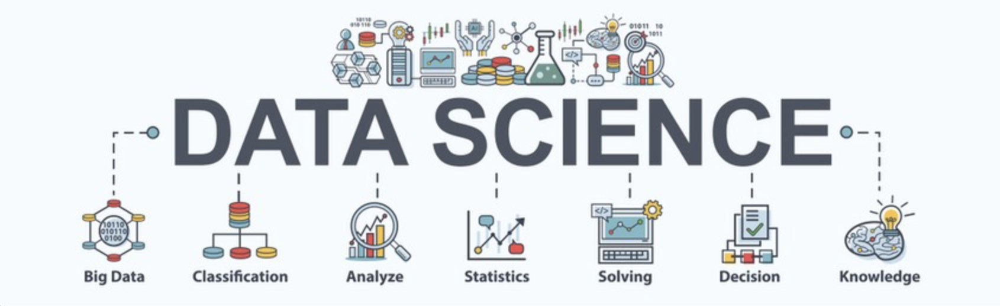

Get in touch
Email is best. I’m open to data analyst/engineer/scientist roles and collaborative projects.


Hi! I'm Aishwarya, a graduate student in Data Science at George Washington University (Dec 2025). I enjoy turning messy data into meaningful insights and building systems that help people make better decisions.
My interests lie at the intersection of data engineering, analytics, and machine learning. I enjoy designing data pipelines, training models, and creating visualizations that transform raw data into clear stories. To me, data science is not just about models — it's about understanding problems, asking the right questions, and communicating insights effectively.
I’m naturally curious and enjoy tackling challenging problems. Many of my projects involve building end-to-end data workflows — from collecting and cleaning data to modeling and presenting insights. Along the way, I’ve worn many hats: analyst, engineer, and researcher.
Outside of coursework, I enjoy experimenting with new technologies, working on personal projects, and continuously learning from the global data community.
I’m always curious and on an ongoing journey to answer a question that fascinates me: Does data drive human decisions, or do humans drive data?
Email is best. I’m open to data analyst/engineer/scientist roles and collaborative projects.